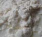

Image Quilting
Part1 Randomly sampled texture:
By using quilt_random function, I create a larger output image by randomly sampling patches of a specified size from a given sample image and placing them into the corresponding positions of the output image. Here are some results about using random sampled quilting.The parameters in each sample are the same,: patch size = 21 and overlap is 5


Part 2 Simple Quilt
The parameters in each sample are the same,: patch size is 21 and overlap is 5 and tol is 5
Part3 Cut Quilt
I took out two patches from example "brick_small.jpg" and visualized the masks and costs
The first three images is the cut mask of the patches. The first one is the mask along the column and the third one is the mask along the row, while the mid one is the combination of the masks. The yellow part indicates the region of the new patch and the purple part means the region of previous image
The map above is the SSD cost map. The yellow region means the cost is high and blue region means the cost is low(under the selected patch)
Additional Quilting
Part 4 Texture Transfer
Gradient Domain Blending
Part 1 Image Reconstruction
In this reconstruct_image_from_gradients function, my goal is to reconstruct an image from its gradients by solving a least-squares optimization problem. The idea is to match the gradients of the reconstructed image with those of the source image in both the x and y directions while maintaining a fixed intensity at a reference pixel.
To do this, I compute the gradients by comparing adjacent pixel intensities, which serves as the basis for the optimization constraints. I then set up a system of equations where the differences in pixel intensities between neighboring pixels in the reconstructed image approximate the gradient differences in the source image. Additionally, I introduce an intensity constraint at the top-left corner pixel to ensure that both images align at that position.To solve this system, I create a sparse matrix A, which encodes the gradient constraints for each pixel, and a vector b, which contains the gradient values from the source image. The matrix A models the relationships between neighboring pixels, while b holds the gradient differences from the source image. I solve the linear system by using a least-squares solver to obtain the pixel intensities of the reconstructed image. The result is a reconstructed image that closely matches the gradients of the source image, preserving its local structure while satisfying the given constraints.
Here is the reconstruct result. Left one is the original image, right one is the reconstruct image

Part 2 Poisson Blending
poissonBlend, performs Poisson image editing by blending a source image (im_s) onto a target background (im_background) using a binary mask (mask_s) that defines the region to be blended. The function works on each color channel separately. For each channel, it first extracts the relevant region from both the source and background images based on the mask. It then computes the gradient of the source image in the selected region using the gradient function and calculates the Laplacian of the source by applying the divergence operator to the gradients. The function then iteratively solves a Poisson equation (500 iterations) to blend the source image into the background. During each iteration, it updates the pixel values of the blended region by averaging neighboring pixel values and subtracting the Laplacian at each point. The result is a seamlessly blended region that integrates the source image with the target background. Finally, the function combines the blended regions from all channels and converts the result back to the appropriate image format using im2uint8.
B&W MixGradient
The function poissonBlendMixedGradients performs a Poisson image blending operation similar to traditional Poisson blending but with a key difference: it uses mixed gradients for blending. While traditional Poisson blending uses the gradient of the source image to guide the blending, this function compares the gradients of both the source (im_s) and target (im_background) images. For each pixel in the region defined by the mask (mask_s), it selects the gradient with the larger magnitude between the source and target to guide the blending process. This approach ensures that the more prominent gradient (whether from the source or the background) is used, which can help better preserve details and edge continuity in the blended region. The function iteratively solves the Poisson equation for 500 iterations to seamlessly integrate the source image into the target background, updating the pixel values by averaging neighboring pixels and subtracting the Laplacian. The final result is a smoother and more natural blend that takes into account the stronger gradients, leading to a more realistic integration of the images.